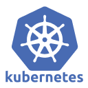
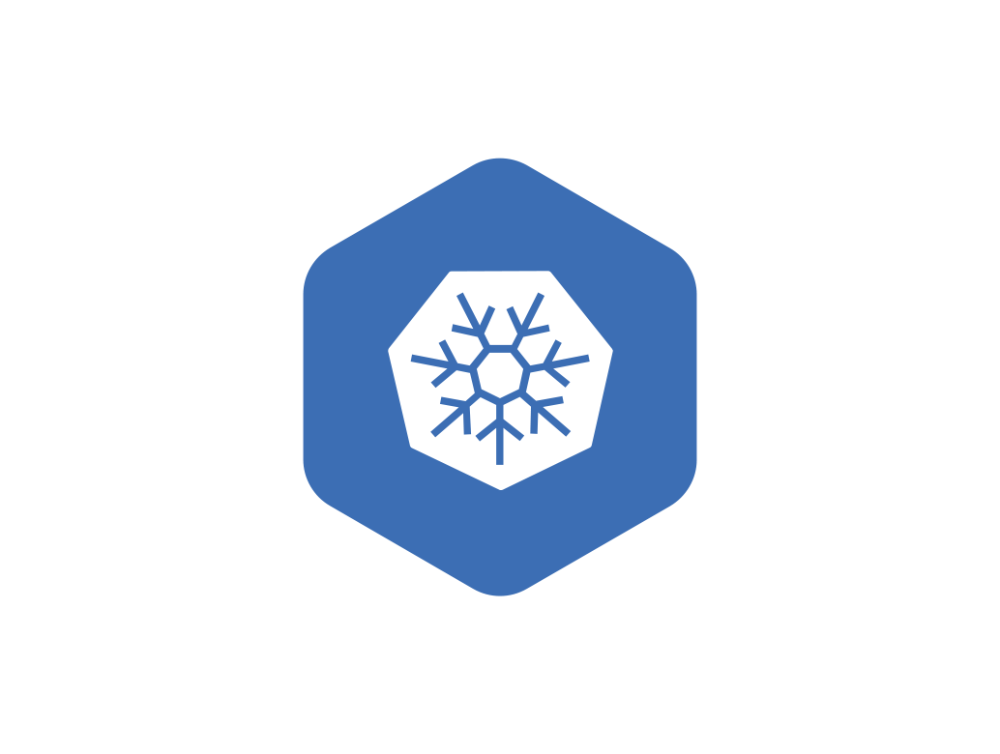

KUBERNETES---GET-STARTED


Pasos de instalacion inicial de Kubernetes
INDICE
¿QUE SE INSTALARÁ?
- Kubernetes
- CRI-O
- CILIUM
CONFIGURACIÓN EN TODOS LOS NODOS
A. CONFIGURACIÓN DEL SO
1. Actualización del sistema
1.1 instalar dependecias y paquetes de apt
sudo apt update && sudo apt upgrade -y
1.2 Herramientas basicas
sudo apt install -y curl wget apt-transport-https ca-certificates gnupg lsb-release
2. Deshabilitar swap
2.1 Deshabilitar swap
sudo swapoff -a
2.2 Deshabilitar wap permanentemente
sudo sed -i '/ swap / s/^/#/' /etc/fstab
2.3 Verificar si swap está deshabilitado
free -h
3. Configuracion del kernel
3.1 Crear archivos de configuracion
cat <<EOF | sudo tee /etc/modules-load.d/k8s.conf overlay br_netfilter EOF
3.2 Cargar modulos de inmediato
sudo modprobe overlay sudo modprobe br_netfilter
3.3 Verificar carga de modulos
lsmod | grep overlay lsmod | grep br_netfilter
4. Configuracion de parametros
4.1 Crea un archivo de configuracion
cat <<EOF | sudo tee /etc/sysctl.d/k8s.conf net.bridge.bridge-nf-call-iptables = 1 net.bridge.bridge-nf-call-ip6tables = 1 net.ipv4.ip_forward = 1 EOF
4.2 Aplicar configuracion
sudo sysctl --system
4.3 Verificar
sudo sysctl net.bridge.bridge-nf-call-iptables \ net.bridge.bridge-nf-call-ip6tables \ net.ipv4.ip_forward
5. Configurar resolucion DNS (/et/hosts)
5.1 Agregar entradas de host
cat <<EOF | sudo tee -a /etc/hosts [IP-MASTER] [HOSTNAME-MASTER] master [IP-WORKER-1] [HOSTNAME-WORKER-1] worker1 [IP-WORKER-2] [HOSTNAME-WORKER-2] worker2 EOF
5.2 Verificar
cat /etc/hosts
B. INSTALACIÓN DE CRI-O
EJECUTAR EN TODOS LOS NODOS
1. Definir variables de version
export CRIO_VERSION=v1.31 export OS=xUbuntu_24.04
2. Importar claves keyring GPG
2.1 Crea carpeta/directorio para keyring
sudo mkdir -p /etc/apt/keyrings
2.2 Descargar keyring oficial de CRI-O
curl -fsSL https://pkgs.k8s.io/addons:/cri-o:/stable:/v1.31/deb/Release.key \ | sudo gpg --dearmor -o /etc/apt/keyrings/cri-o-apt-keyring.gpg
2.3 Agregar repositorio oficial
echo "deb [signed-by=/etc/apt/keyrings/cri-o-apt-keyring.gpg] https://pkgs.k8s.io/addons:/cri-o:/stable:/v1.31/deb/ /" | sudo tee /etc/apt/sources.list.d/cri-o.list
3. Instalación de CRI-O
3.1 Actualizar repositorios
sudo apt-get update
3.2 Instalar CRI-O y dependencias
sudo apt-get install -y cri-o
3.3 Recargar systemd
sudo systemctl daemon-reload
3.4 Habilitar CRI-O para inicio automático
sudo systemctl enable crio
3.5 Iniciar CRI-O
sudo systemctl start crio
3.6 Verificar estado
sudo systemctl status crio
4. Verificación de CRI-O
4.1 Ver versión de CRI-O
sudo crio version
4.2 Ver información del runtime
sudo crictl version sudo crictl info apt-cache policy cri-o
4.3 Verificar que el socket existe
sudo ls -la /var/run/crio/crio.sock
C. INSTALACIÓN DE KUBERNETES
EJECUTAR EN TODOS LOS NODOS
Asegurar que existe la carpeta /etc/apt/keyrings
1. Descargar keyring GPG de Kubernetes
curl -4 -fsSL https://pkgs.k8s.io/core:/stable:/v1.31/deb/Release.key \ | sudo gpg --dearmor -o /etc/apt/keyrings/kubernetes-apt-keyring.gpg
2. Agregar repositorio de Kubernetes
echo "deb [signed-by=/etc/apt/keyrings/kubernetes-apt-keyring.gpg] https://pkgs.k8s.io/core:/stable:/v1.31/deb/ /" | sudo tee /etc/apt/sources.list.d/kubernetes.list
3. Instalar dependencias descargadas de Kubernetes
3.1 Instalación de kubelet, kubeadm y kubectl
sudo apt install -y kubelet kubeadm kubectl
3.2 Retener la actualizacion de kubernetes
sudo apt-mark hold kubelet kubeadm kubectl
3.3 Verifficar la instalacion
dpkg -l | grep kubelet dpkg -l | grep kubeadm dpkg -l | grep kubectl
4. Configurar kubelet para usar CRI-O
cat <<EOF | sudo tee /etc/default/kubelet KUBELET_EXTRA_ARGS="--container-runtime-endpoint=unix:///var/run/crio/crio.sock" EOF
Recargar systemd
sudo systemctl daemon-reload
Reiniciar kubelet
sudo systemctl restart kubelet
Verificar estado (estará en auto-restart hasta que se inicialice el cluster)
sudo systemctl status kubelet
Instalando conntrack
Conntrack es usado en para registrar y monitorear el trafico de red
sudo apt install -y conntrack
Comprobar instalación
which conntrack
salida:
/usr/sbin/conntrack
o
/usr/bin/conntrack
CONFIGURACIÓN EN EL NODO MASTER
1. Crear archivo de configuracion.
1.1 Crear archivo de econfiguracion
cat <<EOF > kubeadm-config.yaml
apiVersion: kubeadm.k8s.io/v1beta4
kind: ClusterConfiguration
kubernetesVersion: v1.31.14
controlPlaneEndpoint: "[HOSTNAME-MASTER]:6443"
networking:
podSubnet: "10.4.0.0/16"
serviceSubnet: "10.96.0.0/12"
---
apiVersion: kubeadm.k8s.io/v1beta4
kind: InitConfiguration
nodeRegistration:
criSocket: "unix:///var/run/crio/crio.sock"
EOF
1.2 Inicializar kubernetes
sudo kubeadm init --config=kubeadm-config.yaml
En realidad es mejor usar un elemento yaml que escribir el codigo de forma directa entonces es normal encontrarnos con este tipo de files.
1.3 config de ctl
1.3.1 Crear directorio .kube
mkdir -p $HOME/.kube
1.3.2 Copiar archivo de configuración
sudo cp-i /etc/kubernetes/admin.conf $HOME/.kube/config
1.3.3 Cambiar permisos al usuario
sudo chown $(id -u):$(id -g) $HOME/.kube/config
1.3.4 Verificar acceso al cluster
kubectl get nodes
1.3.5 Ver información del cluster
kubectl cluster-info
D. INSTALAR CILIUM
d.1 Obtener la última versión estable
CILIUM_CLI_VERSION=$(curl -s https://raw.githubusercontent.com/cilium/cilium-cli/main/stable.txt) CLI_ARCH=amd64
d.2 Descargar Cilium CLI
curl -L --fail --remote-name-all \
https://github.com/cilium/cilium-cli/releases/download/${CILIUM_CLI_VERSION}/cilium-linux-${CLI_ARCH}.tar.gz{,.sha256sum}
d.3 Verificar checksum
sha256sum --check cilium-linux-${CLI_ARCH}.tar.gz.sha256sum
d.4 Extraer e instalar
sudo tar xzvf cilium-linux-${CLI_ARCH}.tar.gz -C /usr/local/bin
d.5 Limpiar
rm cilium-linux-${CLI_ARCH}.tar.gz{,.sha256sum}
d.6 Verificar instalación
cilium version --client
VERIFICAR INSTALACIÓN DE CILIUM
e.1 Ver estado de cilium
cilium status --wait
e.2 Ver pods de Cilium
kubectl get pods -n kube-system -l k8s-app=cilium
e.3 Ver logs de Cilium
kubectl logs -n kube-system -l k8s-app=cilium --tail=50
VERIFICAR QUE EL MASTER ESTA READY
kubectl get nodes
CONFIGURACION EN LOS NODOS WORKERS
Es importante que guardes las keys generadas al inicializar kubernetes
Solo en caso que perdiste las keys pudes ejecutar el comando e el master:
sudo kubeadm token create --print-join-command
1 Ejecutar en cada worker:
sudo kudeadm join [HOSTNAME-MASTER]:6443 \ --token [TOKEN-GENERADO] \ --discovery-token-ca-cert-hash sha256:[HASH_GENERADO] \ --cri-socket unix://var/run/crio/crio.sock
VERIFICACIÓN DEL CLUSTER
Desde el MASTER puedes monitorear todos los nodos registrados en el cluster
1 Ver todos los nodos
kube get nodes
2 Ver con mas detalles
kubectl get nodes -o wide
3 Ver pods del sistema distribuido
kubectl get pods -n kube-system -o wide
(OPCIONAL) ETIQUETAR WORKERS
kubectl label node [HOSTNAME-WORKER] node-role.kubernetes.io/worker=worker # Verificar etiqueta kubectl get nodes --show-labels
LOGO EN LINEA 
Reference-style:
Kubernetes: